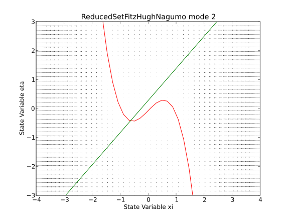
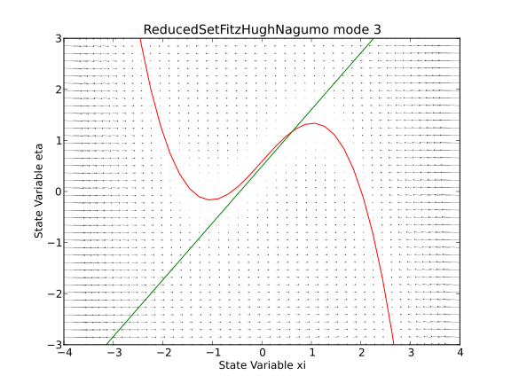
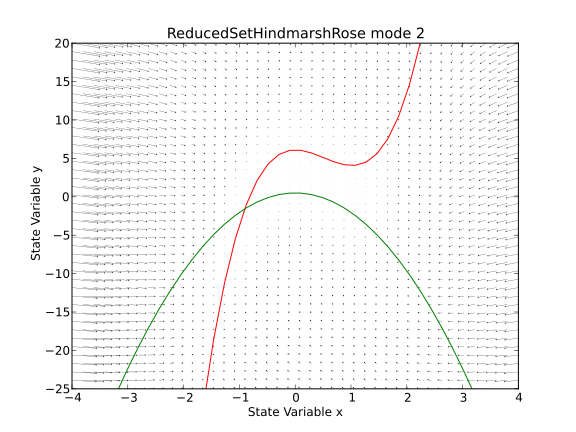
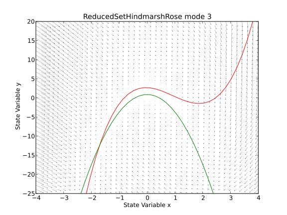

A collection of neuronal dynamics models.
Specific models inherit from the abstract class Model, which in turn inherits from the class Trait from the tvb.basic.traits module.
Defines the abstract class for neuronal models.
Initialize the model with parameters as keywords arguments, a sensible default parameter set should be provided via the trait mechanism.
Defines the dynamic equations. That is, the derivative of the state-variables given their current state state_variables, the past state from other regions of the brain currently arriving coupling, and the current state of the “local” neighbourhood local_coupling.
When needed, this should be a method for calculating parameters that are calculated based on paramaters directly set by the caller. For example, see, ReducedSetFitzHughNagumo. When not needed, this pass simplifies code that updates an arbitrary models parameters – ie, this can be safely called on any model, whether it’s used or not.
traits on this class:
- noise (Initial Conditions Noise)
A model_device_info is a class that provides enough additional information, on request, in order to run the owner on a native code device, e.g. a CUDA GPU.
All such device_data classes will need to furnish their corresponding global values as well as corresponding array arguments for update(.), already initialized based on the instance object that the device_data instance is attached to.
Such things are built on conventions: a class should declare both a device_data attribute as well as class specific information, that is not programmatically available via traits. In general, each of the abstract classes (Model, Noise, Integrator & Coupling) have n_xxpr and xxpr, but they don’t have symmetric properties, so it will be done case by case.
References:
| [WC_1972] | (1, 2) Wilson, H.R. and Cowan, J.D. Excitatory and inhibitory interactions in localized populations of model neurons, Biophysical journal, 12: 1-24, 1972. |
| [WC_1973] | Wilson, H.R. and Cowan, J.D A Mathematical Theory of the Functional Dynamics of Cortical and Thalamic Nervous Tissue |
Used Eqns 11 and 12 from [WC_1972] in dfun. P and Q represent external inputs, which when exploring the phase portrait of the local model are set to constant values. However in the case of a full network, P and Q are the entry point to our long range and local couplings, that is, the activity from all other nodes is the external input to the local population.
The default parameters are taken from figure 4 of [WC_1972], pag. 10
In [WC_1973] they present a model of neural tissue on the pial surface is. See Fig. 1 in page 58. The following local couplings (lateral interactions) occur given a region i and a region j:
E_i-> E_j E_i-> I_j I_i-> I_j I_i-> E_j
The models (, ) phase-plane, including a representation of the vector field as well as its nullclines, using default parameters, can be seen below:
The (, ) phase-plane for the Wilson-Cowan model.
Initialize the WilsonCowan model’s traited attributes, any provided as keywords will overide their traited default.
traits on this class:
- P ()
- Q ()
- a_e ()
- a_i ()
- c_1 ()
- c_2 ()
- c_3 ()
- c_4 ()
- k_e ()
- k_i ()
- noise (Initial Conditions Noise)
- r_e ()
- r_i ()
- state_variable_range (State Variable ranges [lo, hi])
- tau_e ()
- tau_i ()
- theta_e ()
- theta_i ()
- variables_of_interest (Variables watched by Monitors)
A reduced representation of a set of Fitz-Hugh Nagumo oscillators, [SJ_2008].
The models (, ) phase-plane, including a representation of the vector field as well as its nullclines, using default parameters, can be seen below:
The (, ) phase-plane for the first mode of a reduced set of Fitz-Hugh Nagumo oscillators.
The (, ) phase-plane for the second mode of a reduced set of Fitz-Hugh Nagumo oscillators.
The (, ) phase-plane for the third mode of a reduced set of Fitz-Hugh Nagumo oscillators.
Initialise parameters for a reduced representation of a set of Fitz-Hugh Nagumo oscillators.
Calculate coefficients for the Reduced FitzHugh-Nagumo oscillator based neural field model. Specifically, this method implements equations for calculating coefficients found in the supplemental material of [SJ_2008].
Include equations here...
#NOTE: In the Article this modelis called StefanescuJirsa2D
traits on this class:
- K11 ()
- K12 ()
- K21 ()
- a ()
- b ()
- mu ()
- noise (Initial Conditions Noise)
- sigma ()
- state_variable_range (State Variable ranges [lo, hi])
- tau ()
- variables_of_interest (Variables watched by Monitors)
| [SJ_2008] | (1, 2, 3, 4, 5) Stefanescu and Jirsa, PLoS Computational Biology, A Low Dimensional Description of Globally Coupled Heterogeneous Neural Networks of Excitatory and Inhibitory 4, 11, 26–36, 2008. |
The models (, ) phase-plane, including a representation of the vector field as well as its nullclines, using default parameters, can be seen below:
The (, ) phase-plane for the first mode of a reduced set of Hindmarsh-Rose oscillators.
The (, ) phase-plane for the second mode of a reduced set of Hindmarsh-Rose oscillators.
The (, ) phase-plane for the third mode of a reduced set of Hindmarsh-Rose oscillators.
Initialise parameters for a reduced representation of a set of Hindmarsh Rose oscillators, [SJ_2008].
The dynamic equations were taken from [SJ_2008], ...
Calculate coefficients for the neural field model based on a Reduced set of Hindmarsh-Rose oscillators. Specifically, this method implements equations for calculating coefficients found in the supplemental material of [SJ_2008].
Include equations here...
#NOTE: In the Article this modelis called StefanescuJirsa3D
traits on this class:
- K11 ()
- K12 ()
- K21 ()
- a ()
- b ()
- c ()
- d ()
- mu ()
- noise (Initial Conditions Noise)
- r ()
- s ()
- sigma ()
- state_variable_range (State Variable ranges [lo, hi])
- variables_of_interest (Variables watched by Monitors)
- xo ()
The Jansen and Rit is a biologically inspired mathematical framework originally conceived to simulate the spontaneous electrical activity of neuronal assemblies, with a particular focus on alpha activity, for instance, as measured by EEG. Later on, it was discovered that in addition to alpha activity, this model was also able to simulate evoked potentials.
| [JR_1995] | (1, 2, 3, 4) Jansen, B., H. and Rit V., G., Electroencephalogram and visual evoked potential generation in a mathematical model of coupled cortical columns, Biological Cybernetics (73) 357:366, 1995. |
| [J_1993] | Jansen, B., Zouridakis, G. and Brandt, M., A neurophysiologically-based mathematical model of flash visual evoked potentials |
The (, ) phase-plane for the Jansen and Rit model.
The dynamic equations were taken from [JR_1995]
can be any arbitrary function, including white noise or random numbers taken from a uniform distribution, representing a pulse density with an amplitude varying between 120 and 320
For Evoked Potentials, a transient component of the input, representing the impulse density attribuable to a brief visual input is applied. Time should be in seconds.
traits on this class:
- A ()
- B ()
- J ()
- a ()
- a_1 ()
- a_2 ()
- a_3 ()
- a_4 ()
- b ()
- mu ()
- noise (Initial Conditions Noise)
- nu_max ()
- p_max ()
- p_min ()
- r ()
- state_variable_range (State Variable ranges [lo, hi])
- v0 ()
- variables_of_interest (Variables watched by Monitors)
This is an optimized version of the above JansenRit model, using numexpr and constant memory (as far as is obvious).
Note that it caches parameters and derivative arrays on the first call to the dfun method, so if you change the number of nodes or the parameters, you need to invalidate the cache by setting the invalid_dfun_cache attribute to True.
traits on this class:
- A ()
- B ()
- J ()
- a ()
- a_1 ()
- a_2 ()
- a_3 ()
- a_4 ()
- b ()
- mu ()
- noise (Initial Conditions Noise)
- nu_max ()
- p_max ()
- p_min ()
- r ()
- state_variable_range (State Variable ranges [lo, hi])
- v0 ()
- variables_of_interest (Variables watched by Monitors)
The Generic2dOscillator model is a generic dynamic system with two state variables. The dynamic equations of this model are composed of two ordinary differential equations comprising two nullclines. The first nullcline is a cubic function as it is found in most neuron and population models; the second nullcline is arbitrarily configurable as a polynomial function up to second order. The manipulation of the latter nullcline’s parameters allows to generate a wide range of different behaviors.
See:
[FH_1961] FitzHugh, R., Impulses and physiological states in theoretical models of nerve membrane, Biophysical Journal 1: 445, 1961.
[Nagumo_1962] Nagumo et.al, An Active Pulse Transmission Line Simulating Nerve Axon, Proceedings of the IRE 50: 2061, 1962.
[SJ_2011] Stefanescu, R., Jirsa, V.K. Reduced representations of heterogeneous mixed neural networks with synaptic coupling. Physical Review E, 83, 2011.
[SJ_2010] Jirsa VK, Stefanescu R. Neural population modes capture biologically realistic large-scale network dynamics. Bulletin of Mathematical Biology, 2010.
[SJ_2008_a] Stefanescu, R., Jirsa, V.K. A low dimensional description of globally coupled heterogeneous neural networks of excitatory and inhibitory neurons. PLoS Computational Biology, 4(11), 2008).
The model’s (, ) time series and phase-plane its nullclines can be seen in the figure below.
The model with its default parameters exhibits FitzHugh-Nagumo like dynamics.
| EXCITABLE CONFIGURATION | |
|---|---|
| Parameter | Value |
| a | -2.0 |
| b | -10.0 |
| c | 0.0 |
| d | 0.02 |
| I | 0.0 |
|
|
| BISTABLE CONFIGURATION | |
|---|---|
| Parameter | Value |
| a | 1.0 |
| b | 0.0 |
| c | -5.0 |
| d | 0.02 |
| I | 0.0 |
|
|
| EXCITABLE CONFIGURATION (similar to Morris-Lecar) | |
|---|---|
| Parameter | Value |
| a | 0.5 |
| b | 0.6 |
| c | -4.0 |
| d | 0.02 |
| I | 0.0 |
|
|
| SanzLeonetAl 2013 | |
|---|---|
| Parameter | Value |
| a |
|
| b | -10.0 |
| c | 0.0 |
| d | 0.02 |
| I | 0.0 |
|
|
The (, ) phase-plane for the generic 2D population model for default parameters. The dynamical system has an equilibrium point.
May need to put kwargs back if we can’t get them from trait...
The two state variables and are typically considered to represent a function of the neuron’s membrane potential, such as the firing rate or dendritic currents, and a recovery variable, respectively. If there is a time scale hierarchy, then typically is faster than corresponding to a value of greater than 1.
#TODO: update equations
The equations of the generic 2D population model read
where external currents provide the entry point for local, long-range connectivity and stimulation.
traits on this class:
- I ()
- a ()
- alpha ()
- b ()
- beta ()
- c ()
- d ()
- e ()
- f ()
- g ()
- noise (Initial Conditions Noise)
- state_variable_range (State Variable ranges [lo, hi])
- tau ()
- variables_of_interest (Variables watched by Monitors)
Liley lumped model as presented in Steyn-Ross et al 1999.
This model is to be use for modelling cortical dynamics in which “inputs” to neuronal assemblies are treated as random Gaussian fluctuations about a mean value. Anesthetic agent effects are modelled as as a modulation of the inhibitory neurotransmitter rate constant.
The main state variable is h_e, the average excitatory soma potential, coherent fluctuations of which are believed to be the source of scalp-measured electroencephalogram ͑EEG͒ signals.
Parameters are taken from Table 1 [Steyn-Ross_1999]
State variables:
h_e: exc population mean soma potential [mV] h_i: exc population mean soma potential [mV]
I_ee: total ‘exc’ current input to ‘exc’ synapses [mV] I_ie: total ‘inh’ current input to ‘exc’ synapses [mV] I_ei: total ‘exc’ current input to ‘inh’ synapses [mV] I_ii: total ‘inh’ current input to ‘inh’ synapses [mV]
: weighting factors for the I_jk inputs [dimensionless]
: long-range (cortico-cortical) spike input to exc population : long-range (cortico-cortical) spike input to inh population [ms-1]
EPSP: exc post-synaptic potential [mV] IPSP: inh post-synaptic potential [mV]
Mean axonal conduction speed: 7 mm/ms
S_e(h_e): sigmoid function mapping soma potential to firing rate [ms]-1 S_i(h_i): sigmoid function mapping soma potential to firing rate [ms]-1
The models (, :math:h_i`) phase-plane, including a representation of the vector field as well as its nullclines, using default parameters, can be seen below:
The (, ) phase-plane for the LileySteynRoss model.
traits on this class:
- A_ee ()
- A_ei ()
- G_e ()
- G_i ()
- N_a_ee ()
- N_a_ei ()
- N_b_ee ( )
- N_b_ei ()
- N_b_ie ()
- N_b_ii ()
- g_e ()
- g_i ()
- gamma_e ()
- gamma_i ()
- h_e_rest ()
- h_e_rev ()
- h_i_rest ()
- h_i_rev ()
- lambd ()
- noise (Initial Conditions Noise)
- p_ee ()
- p_ei ()
- p_ie ()
- p_ii ()
- state_variable_range (State Variable ranges [lo, hi])
- tau_e ()
- tau_i ()
- theta_e ()
- theta_i ()
- variables_of_interest (Variables watched by Monitors)
A modified Morris-Lecar model that includes a third equation which simulates the effect of a population of inhibitory interneurons synapsing on the pyramidal cells.
| [Larteretal_1999] | Larter et.al. A coupled ordinary differential equation lattice model for the simulation of epileptic seizures. Chaos. 9(3): 795, 1999. |
| [Breaksetal_2003_a] | Breakspear, M.; Terry, J. R. & Friston, K. J. Modulation of excitatory synaptic coupling facilitates synchronization and complex dynamics in an onlinear model of neuronal dynamics. Neurocomputing 52–54 (2003).151–158 |
| [Breaksetal_2003_b] | (1, 2, 3) M. J. Breakspear et.al. Modulation of excitatory synaptic coupling facilitates synchronization and complex dynamics in a biophysical model of neuronal dynamics. Network: Computation in Neural Systems 14: 703-732, 2003. |
| [Honeyetal_2007] | Honey, C.; Kötter, R.; Breakspear, M. & Sporns, O. * Network structure of cerebral cortex shapes functional connectivity on multiple time scales*. (2007) PNAS, 104, 10240 |
| [Honeyetal_2009] | Honey, C. J.; Sporns, O.; Cammoun, L.; Gigandet, X.; Thiran, J. P.; Meuli, R. & Hagmann, P. Predicting human resting-state functional connectivity from structural connectivity. (2009), PNAS, 106, 2035-2040 |
| [Alstottetal_2009] | Alstott, J.; Breakspear, M.; Hagmann, P.; Cammoun, L. & Sporns, O. Modeling the impact of lesions in the human brain. (2009)), PLoS Comput Biol, 5, e1000408 |
Equations and default parameters are taken from [Breaksetal_2003_b]. All equations and parameters are non-dimensional and normalized. For values of d_v < 0.55, the dynamics of a single column settles onto a solitary fixed point attractor.
Parameters used for simulations in [Breaksetal_2003_a] Table 1. Page 153. Two nodes were coupled.
| Table 1 | |
| Parameter | Value |
| I | 0.3 a_ee | 0.4 a_ei | 0.1 a_ie | 1.0 a_ne | 1.0 a_ni | 0.4 r_NMDA | 0.2 delta | 0.001 | |
NOTES about parameters
d_V For d_V < 0.55, uncoupled network, the system exhibits fixed point dynamics; for 55 < lb.d_V < 0.59, limit cycle atractors; and for d_V > 0.59 chaotic attractors (eg, d_V=0.6,aee=0.5,aie=0.5,
gNa=0, Iext=0.165)
C The long-range coupling ‘C’ is ‘weak’ in the sense that they investigated parameter values for which C < a_ee and C << a_ie.
The (, ) phase-plane for the Larter-Breakspear model.
traits on this class:
- C ()
- Iext ()
- QV_max ()
- QZ_max ()
- TCa ()
- TK ()
- TNa ()
- VCa ()
- VK ()
- VL ()
- VNa ()
- VT ()
- ZT ()
- aee ()
- aei ()
- aie ()
- ane ()
- ani ()
- b ()
- d_Ca ()
- d_K ()
- d_Na ()
- d_V ()
- d_Z ()
- gCa ()
- gK ()
- gL ()
- gNa ()
- noise (Initial Conditions Noise)
- phi ()
- rNMDA ()
- state_variable_range (State Variable ranges [lo, hi])
- tau_K ()
- variables_of_interest (Variables watched by Monitors)
| [WW_2006] | Kong-Fatt Wong and Xiao-Jing Wang, A Recurrent Network Mechanism of Time Integration in Perceptual Decisions. Journal of Neuroscience 26(4), 1314-1328, 2006. |
| [DPA_2013] | Deco Gustavo, Ponce Alvarez Adrian, Dante Mantini, Gian Luca Romani, Patric Hagmann and Maurizio Corbetta. Resting-State Functional Connectivity Emerges from Structurally and Dynamically Shaped Slow Linear Fluctuations. The Journal of Neuroscience 32(27), 11239-11252, 2013. |
traits on this class:
- I_o ()
- J_N ()
- a ()
- b ()
- d ()
- gamma ()
- noise (Initial Conditions Noise)
- sigma_noise ()
- state_variable_range (State variable ranges [lo, hi])
- tau_s ()
- variables_of_interest (Variables watched by Monitors)
- w ()
The Kuramoto model is a model of synchronization phenomena derived by Yoshiki Kuramoto in 1975 which has since been applied to diverse domains including the study of neuronal oscillations and synchronization.
See:
[YK_1975] Y. Kuramoto, in: H. Arakai (Ed.), International Symposium on Mathematical Problems in Theoretical Physics, Lecture Notes in Physics, page 420, vol. 39, 1975.
[SS_2000] S. H. Strogatz. From Kuramoto to Crawford: exploring the onset of synchronization in populations of coupled oscillators. Physica D, 143, 2000.
[JC_2011] J. Cabral, E. Hugues, O. Sporns, G. Deco. Role of local network oscillations in resting-state functional connectivity. NeuroImage, 57, 1, 2011.
traits on this class:
- noise (Initial Conditions Noise)
- omega ()
- state_variable_range (State Variable ranges [lo, hi])
- variables_of_interest (Variables watched by Monitors)
The Jansen and Rit models as studied by David et al., 2005 #TODO: finish this model
Initialise parameters for the Jansen Rit column, [JR_1995].
The dynamic equations were taken from [JR_1995]
can be any arbitrary function, including white noise or random numbers taken from a uniform distribution, representing a pulse density with an amplitude varying between 120 and 320
For Evoked Potentials, a transient component of the input, representing the impulse density attribuable to a brief visual input is applied. Time should be in seconds.
traits on this class:
- He ()
- Hi ()
- eo ()
- gamma_1 ()
- gamma_2 ()
- gamma_3 ()
- gamma_4 ()
- noise (Initial Conditions Noise)
- r ()
- state_variable_range (State Variable ranges [lo, hi])
- tau_e ()
- tau_i ()
- variables_of_interest (Variables watched by Monitors)
The Epileptor is a composite neural mass model of six dimensions which has be crafted to model the phenomenology of epileptic seizures.
This model, its motivation and derivation are currently in preparation for publication (Jirsa et al, 2013)
traits on this class:
- Iext (Iext)
- Iext2 (Iext2)
- Kf (K_f)
- Ks (K_s)
- Kvf (K_vf)
- a (a)
- aa (aa)
- b (b)
- c (c)
- d (d)
- noise (Initial Conditions Noise)
- omega2 (omega2)
- r (r)
- s (s)
- slope (slope)
- state_variable_range (State variable ranges [lo, hi])
- tau (tau)
- tt (tt)
- variables_of_interest (Variables watched by Monitors)
- x0 (x0)
{kind=link}